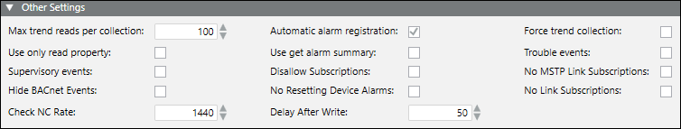

Other Settings

The Other Settings expander displays additional default BACnet device settings, which you can modify.
Other Settings | |
Item | Description |
Max trend reads per collection | Indicates the maximum number of trend records to read for a collection. |
Automatic alarm registration | Indicates whether the BACnet driver is configured as receiver of the alarm notifications in all the notification class objects. Default is enabled. |
Force trend collection | Indicates whether the trend collection is forced by position for third-party devices. Default is disabled. |
Use only read property | Indicates whether the ReadProperty service only is used for third-party devices that do not support the ReadPropertyMultiple service. Default is disabled. |
Use get alarm summary | Indicates whether the GetAlarmSummary service is used for third-party devices that do not correctly support the GetEventInfo service. Default is disabled. |
Trouble events (for fire system only) | Indicates whether Event List displays both incoming and outgoing Trouble events. This value is imported from the configuration file of the fire system's panels. Default is disabled. |
Supervisory events (for fire system only) | Indicates whether Event List displays both incoming and outgoing Supervisory events. This value is imported from the configuration file of the fire system's panels. |
Disallow subscriptions | Indicates that no COV traffic will occur for this device. The device will use polling only. |
No MSTP link subscriptions | Indicates that no MSTP link subscriptions will occur for this device in order to reduce traffic on an MSTP network. |
Hide BACnet Events | Indicates whether BACnet alarms, notify type Event, are hidden. If this box is checked, the alarms do not display in the event list, but they are recorded in the activity log. |
No Resetting Device Alarms | Prevents a device alarm from being reset and erased while the device is still failed. The check box is unchecked by default. |
No Link Subscriptions | Prevents the BACnet driver from making subscriptions for related items. The result is less network traffic in the driver and less polling of devices. |
Check NC Rate | Indicates the interval in minutes the driver checks to see that the management station is still registered to receive alarms. |
Delay After Write | Indicates the interval in milliseconds the driver waits after a command to read the value to see if it changes. |